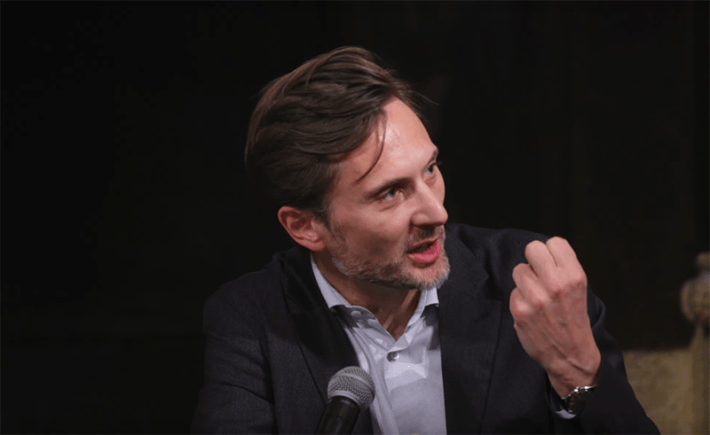
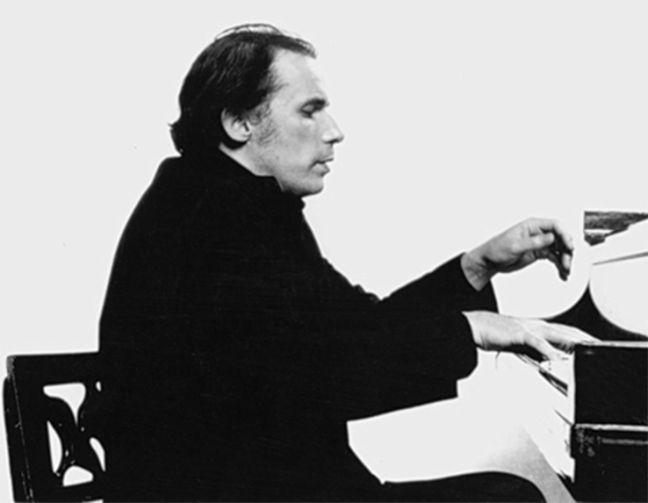

I don’t really understand metaphysics, but I do like to hear very smart people talk about it, especially when it involves one of my favorite artists, pianist Glenn Gould, who shuffled off this mortal coil in 1982. So in April, I attended a talk called “The Perfectible Animal: Humanity as an Ideal” by French writer and philosophy professor Elie During.
The talk, sponsored by the Nour Foundation, a philosophy nonprofit, took place at the Morgan Library and Museum in New York City, the restored home of industrial baron J.P. Morgan. I sat with other listeners in what had been Morgan’s personal library, an Italian Renaissance-style palazzo. We were encompassed by magnificent walls of books on dark walnut and bronze shelves. Paintings above the books and below the glass-stained ceiling encircled the room with images of Dante, Galileo, Michelangelo, and Botticelli, and symbols of philosophy, history, poetry, and science. It’s true, literacy was once important to American leaders.
During, magnetic as a Jean-Luc Godard leading man, was interviewed by the personable and probing Steve Paulson, executive producer of the public radio show, To the Best of Our Knowledge, and a regular Nautilus contributor.
Gould’s notion was that you could approach the essence of a musical work by transcending any material circumstances.
“Metaphysics; so this is a spooky word,” During said. “It doesn’t mean necessarily anything occult or even religious. Metaphysics is about the basic structures that allow us to think about external reality.” It’s about imagining how much more interesting the world could be than the world taken for granted by “the naturalist default mode of most scientific minds.”
That made sense, though I wasn’t too sure about the “basic structures.” Neither was Paulson, who asked about it.
That came from Plato, During said. The king of Greek philosophers believed a soul constituted the “highest level of reality, the most real aspect of human experience.” And “this soul was not a material substance but a form of unity or simplicity at its core. And when you scratch the surface, and you aim for what constitutes the essence of being a human being, you reach this core level.”
I could feel my hold on During’s remarks slipping.

THE METAPHYSICIAN: “I was an imaginative child,” Elie During (above) said. “I wrote comic books and wanted to be a filmmaker. The philosophical drive is also about imagining how more interesting the world can be.” Photo courtesy of the Nour Foundation.
Plato believed “there is something within us which has an affinity with what he called the ‘divine now,’” During said. The divine “was not a personal god but a higher level of reality.” Through disciplines like mathematics “the human mind is capable of relating to levels of reality that are more robust, more solid, than anything given to the senses.”
When During started to talk about Gould, he was on the level of reality to which I could relate. While recording music, During explained, Gould did take after take of bars in a composition, piecing together the takes he liked best, always in search of the ideal form of the work.
“Gould’s notion was that you could approach the essence of a musical work by transcending any material circumstances, such as what kind of instruments you’re going to play, a modern piano, say, or adhering to historical rendering of the work,” During said. “You could say this is a Platonic version of musical experience, which says there are ideal forms out there that are indifferent to material sensation.”
“The purpose of art is … the gradual, lifelong construction of a state of wonder and serenity."
That indeed is how Gould worked. He was always pursuing a universal idea that transcended the piano and the score. He was a trenchant essayist. He wrote that what he admired about Bach’s Goldberg Variations is that it is music, “like Baudelaire’s lovers, ‘that rests lightly on the wings of the unchecked wind.’ It has, then, unity through intuitive perception, unity born of craft and scrutiny ...”
Gould was speaking During’s language. In fact, Gould read deeply in spiritual works; Jesuit priest and scholar Teilhard de Chardin was one of his favorite authors. “The purpose of art,” Gould once wrote, “is not the release of a momentary ejaculation of adrenaline, but is, rather, the gradual, lifelong construction of a state of wonder and serenity.”
Gould was a great storyteller. During a series of concerts in 1958 in Tel Aviv, Israel, he told interviewer Jonathan Cott, he was mortified by an “absolutely rotten piano” he was given to play. He coasted through pieces he knew well, and the music didn’t suffer too much by playing “this monstrosity,” he said. But when the program shifted and he had to rehearse a different work, Beethoven’s Piano Concerto No. 2, Gould felt he “played like a pig because this piano had really gotten to me.”

PLATO AT THE PIANO: Pianist Glenn Gould sounded Plato’s notes of metaphysics when he described Bach’s Goldberg Variations as music that has “unity through intuitive perception.” Photo by Don Hunstein / Glenn Gould Foundation, Wikimedia Commons.
The next day Gould drove his rental car to a sand dune by the Mediterranean Sea and sat alone in the car. He rehearsed the entire piece in his head by imagining he was playing it on an ideal piano. He wanted a tactile image of the whole work in his head. He never moved his fingers as he imagined the work because he didn’t want to stir memories of how he might have played it before.
“I got to the auditorium in the evening, played the concert, and it was without question the first time I’d been in a really exalted mood throughout the entire stay there—I was absolutely free of commitment to that unwieldy beast,” Gould said.
Compelled by his image of the work, Gould literally played the piano differently, with a softer touch than usual. “And what came out was really rather extraordinary,” he said. He received compliments backstage that stuck with him. “You were not quite one of us,” a woman, an acquaintance of Max Brod, the Kafka scholar, told him. “You were—you were—your being was removed.”
I must say During’s discussion of Gould sparked new connections in my material brain. I do know what it means to work and rework material forms, such as language and music, in pursuit of an immaterial vision that feels right and real. Gould’s 1981 version of the Goldberg Variations can indeed make you feel like you have touched the core of infinite reality.
Ultimately, During said, seeking the ideal is a journey into yourself. “We should view this business of shaping yourself, achieving an ideal or better version of yourself, as a way that gives you access to dimensions of yourself that are as solid and real as those ideals in music or mathematics,” he said. “This is what Plato had in mind when he said the soul has an inherent affinity with the ideal.”
The affinity of the soul with the ideal was a bridge too far for me. But I remained moved by the notion that an ideal or better version of me was out there somewhere. Just as Gould imagined his ideal musical work, I could find new dimensions of thought and feeling. Maybe I understood metaphysics after all. 
Lead image: Suryadi suyamtina / Shutterstock
References
- Original Article: https://nautil.us/you-can-achieve-the-ideal-version-of-yourself-1215238/